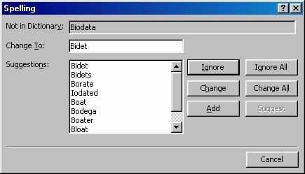
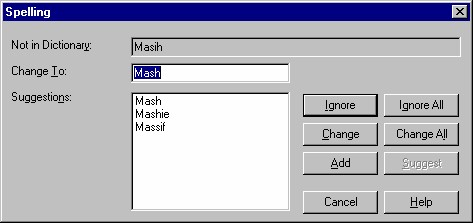

5. Memeriksa ejaan
Jika Anda telah sering berada di World Wide Web, maka akan Anda sadari adanya
satu peraturan di WWW, yaitu “jangan mengecek ejaan pada halaman Anda”.
Karena, terus terang, banyak sekali ejaan yang salah di web. Di sana bayak
menggunakan kata-kata slang.
Ada dua cara untuk mengecek ejaan. Anda dapat mengecek ejaan dari dalam
FrontPage Editor, dengan cara yang sama seperti yang biasa Anda lakukan dengan
pengolah kata. Yaitu klik tombol Check Spelling atau aktifkan perintah Tools _
Spelling.
Apabila Anda telah menggabungkan file pada di halaman yang aktif, teks di file
yang digabungkan itu tidak akan dicek. Anda harus melakukan hal ini secara
terpisah.
Pengecekan juga tidak dilakukan pada teks yang ada di kotak dialog, seperti judul
yang Anda ketik pada kotak dialog Page Properties.
Sebaiknya pengecekan ejaan ini Anda lakukan nanti setelah Anda menerbitkan
halaman web.
Anda dapat mengecek ejaan pada semua halaman sekaligus dengan menggunakan
FrontPage Explorer, yaitu aktifkan perintah Tools _ Spelling. Anda akan melihat
kotak dialog seperti yang ada di Gambar 5.14.
Dengan kotak dialog tersebut Anda dapat memilih untuk mencari ke seluruh
halaman (pilihan All Pages, sebagai pilihan default) atau hanya pada halaman yang
ada di window FrontPage Explorer saja (pilihan Selected pages).

Gambar 5.14 Kotak dialog Spelling
Perhatikan juga kotak cek Add Pages for each page with misspellings. Klik kotak
cek ini jika Anda ingin menambahkan suatu tugas memperbaiki ejaan secara
otomatis.
Kemudian klik tombol Start, FrontPage akan mengecek pemakaian ejaan (kata dalam
bahasa Inggris) di tiap halaman, lalu menampilkan daftar hasilnya, Gambar 5.15.

Gambar 5.15 Hasil pengecekan ejaan
Selanjutnya Anda bisa memeriksa kata-kata yang ditemukan secara berurut satu
persatu. Pemeriksaan yang bisa Anda lakukan adalah:
• Pada kotak Change To ditampilkan kata-kata yang dicurigai salah. Dan
FrontPage XP menampilkan kata-kata penggantinya pada kotak Suggestion.
Anda bisa memilih salah satu kata yang disarankan tersebut lalu klik tombol
Change.
• Kalau Anda tidak ingin mengganti kata tersebut, klik tombol Ignore.
• Jika Anda ingin membiarkan semua kata seperti apa adanya, klik tombol
Ignore All.
• Untuk menutup kotak dialog tersebut, klik tombol Close (X) pada pojok
kanan atas kotak dialog.
Copyright © Herlan Lesmana
Created with the Freeware Edition of HelpNDoc: Easy to use tool to create HTML Help files and Help web sites